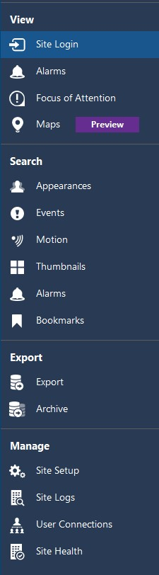
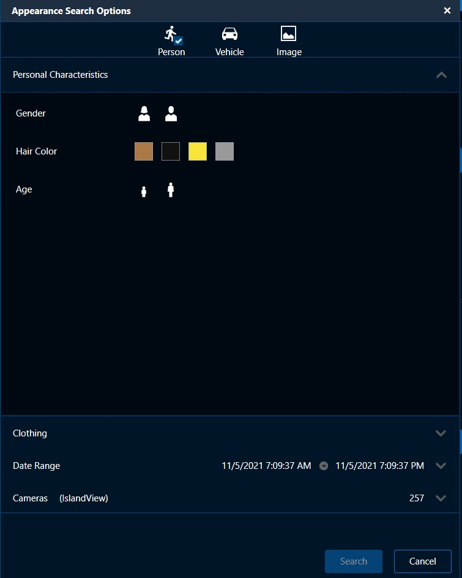
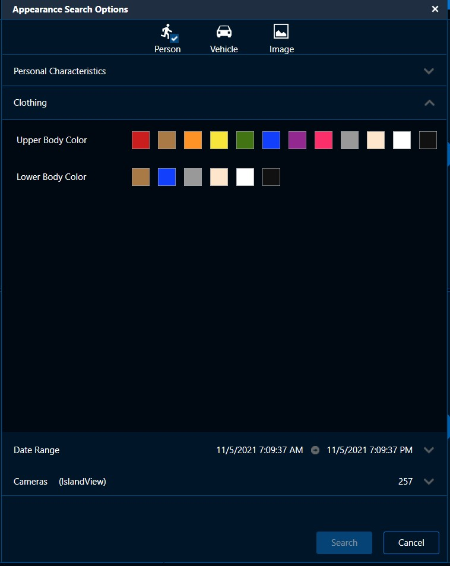
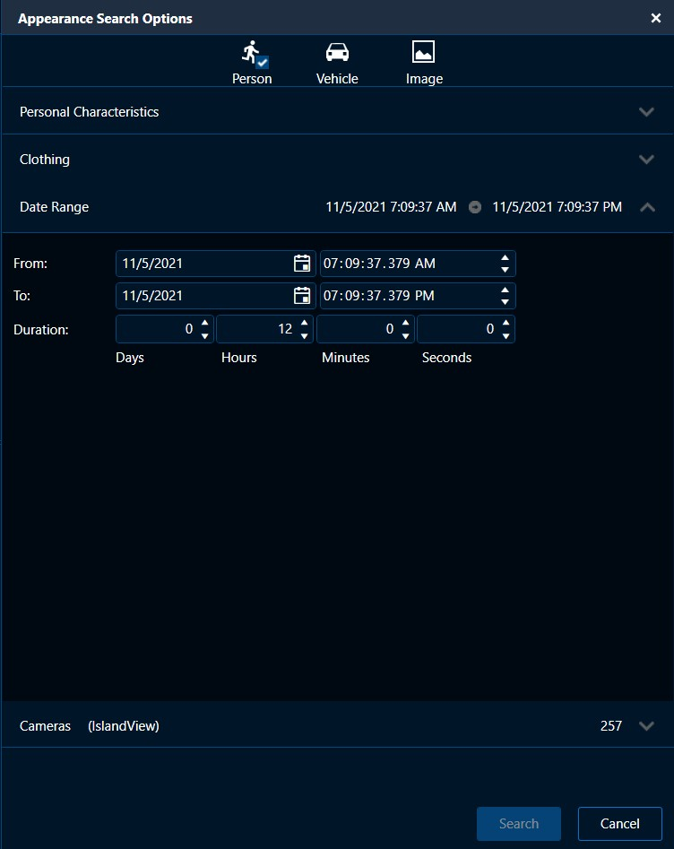
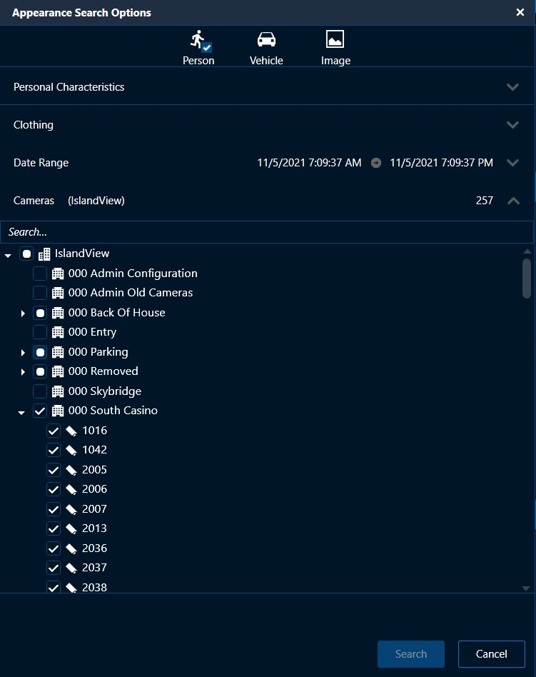

The software we use in the Observation and Server room are crucial to the flow of the casino. It is
imperative
to learn these
thoroughly, through and through, so we can ensure proper function of all equipment at all time. At the end
of
the day, we need
to be confident that nothing will fail overnight.
Avigilon Control Center Client
- Found on most computers in observation room
- Access simply by choosing the site (IslandView) that auto-populates in the corner, and log in with basic Operator credentials
- On the dropdown to the left, all the devices will populate. By dragging them to the viewing window, or double-clicking, you can view the live image from that device.
- In the top left next to “live” will be a button for “recorded”, where you will be able to search through the devices memory of video
- Next to the that is a button that allows you to select how many screens you want open for viewing, and their format.
- Full screen is self-explanatory
- Cycle View → This allows you to cycle through all the tabs (if you have more than one open) by displaying each tab a few seconds at a time.
- Save View → captures the current screens in the view and saves them as a preset
- Collaborate → share views with another individual on a separate client
- In the top left corner of the image to the right, the three bars indicate the “New Task Menu” which includes: alarms, searching, exporting, and management of the site


In the top right of
each viewing window,
you will see these icons
- The arrow
- Represents a point/click cursor
- Magnifying Glasses (+/-)
- Represent zooming in and out of the image
- The Hand
- Is for dragging the image to where you want to focus
- The 4th icon represents PTZ controls
- If a camera has PTZ capability, you can use this button to bring up the PTZ controller Clicking on the screen and dragging the cursor in the middle will move the PTZ, you can also zoom in and out, even with the scroller on your mouse
-when view video, you can double-click the screen to activate full screen.
Another option is to use the icons in the corner of the image
-the leftmost icon is an alarm activation button
-next is the snapshot icon, where you can screenshot the image and export it
-the next icon is to mak the current view fullscreen
-the ‘X’ is for closing the viewing window
-When right clicking on the view window, it will bring you up a number of functions shown below

Recorded Video

A must-know feature of Avigilon's software is the Searching features.
You can find all of the "Search" options when you open the sidebar on the left of the screen
Depending on your search type, different dialogue boxes will populate, giving you the tools
needed
to complete that search
Appearance Search
-new to us feature that greatly affects the way we can find people
Appearance search is found in the New Task menu". When you click Appearance Search, a new window
will
populate
Starting at the top you have your three search items: what are you searching for?
You can search for the appearance of an individual, car or an individual using an image
Appearance analytics only work for analytic-capable digital cameras. The model number will have a “A” at
the
end of the first portion of the sequence.
The sequence for searching is as follows:
1. In the New Task menu , click Appearances .
2. Select the person or vehicle icon, depending on which you are searching for.
3. Select the options that best describe the person or vehicle description.
-using gender, hair color and age, and clothing colors for an individual
-using type and color for a vehicle
4. Click Date Range to set the date and time of your search.
5. Choose Cameras you want to include in the search. By default, all cameras
enabled with the Avigilon Appearance Search feature are selected.
6. Click Search.
The sequence is the same for vehicle searching.
Below, you can see the different steps of making an Appearance Search.
The first image shows the screen that first appears when you click "Appearance Search"
which displays the choices for an object to search for and the three basic traits to choose.
The following image shows the clothing options to select from, including top half (shirt) and bottom
half(pants).
After that, you have to select a timeframe for which you are searching for the object of interest.
The last image shows that you must select which cameras you want to use for the search. It is displayed
in the same format as the site tree, making it simple to find which cameras you are looking for.
It is preset on all cameras that have analytic capabbilities.




 -this will refine and designate the system to only search within the parameter of your choice.
-this will refine and designate the system to only search within the parameter of your choice.
Events Search

Motion — Motion was detected in the target area.
Digital Input — A signal was sent from a device.
Classified Object — A person or vehicle was detected in the configured region of interest.
Tampering — An unexpected change in the scene was detected.
ONVIF — A third-party ONVIF device event was detected.
Presence or Presence Dwell — The Avigilon Presence Detector sensor detected an individual.
Unusual Motion — Unusual pixel motion was detected.
Unusual Activity — A classified object behaving unusually was detected.
Face Watch List Match — A watch list match was detected.
Person Without Mask — A person without a face mask was detected
-Search through specific date and time ranges for any of the above events
Motion Search
-Motion search is similar to the other search types -You choose specific cameras and times of where you are looking for motion -you can choose “Classified Object Motion” or “Pixel Motion” -you can choose how long an object needs to be in a frame before considering it a search result -Pixel Search will highlight (if applied) any pixels that show movement within a designated areaThumbnail Search
-Thumbnail search allows you to choose specific cameras, select a time and date range and the system will display thumbnails of images at specific times. -Comes in use especially when looking for changes in a shot, when an item was dropped, left or placed, etc.. -When you find a thumbnail you are looking for you can choose to ‘step in’ to it, and will show you more thumbnails at a more defined time. This makes it easy to narrow down to when an event occured.Alarm Search
-Searching Alarms gives you the ability to find when an alarm event occured. You choose which alarms you want to search through, and choose a period of time to search through. If there are any results, they will populate above the rimeline. -You can see specifically what the incident was. -It shows you the image from the camera that is linked to the alarm -You can see specific details about the time and which alarm it is. -You can choose a number of actions to use when you find the event you are searching for as shown below
Bookmark Search
-Allows you to search through a time period to look for any bookmarks that may have been created. -Bookmarks are generally used to save a key image, or a time of an imageExporting Footage
Exporting footage is a very useful skill to know. Almost every kind of event has to be exported! From
slips and falls to money laundering, these
video clips must be downloaded and saved to a file. Once the event is fully exported it is able to be
shared anywhere, and the file is
exported with a version of Aviglon Player, giving others the capability to view the exported footage.